Deutsch bedienen
Bedienseite, Stand 22.11.2026. Wie man die vierzehn Werkzeuge des Fachs öffnet und bedient, was die Rückmeldungen bedeuten und was der Arbeitsstand behält. Die Bilder sind Bildschirmfotos der App.
Das Fenster
Deutsch ist ein Fach der App Schule: man öffnet sie im Menü
Anwendungen mit  Schule oder mit
Schule oder mit
Alt+A und wählt oben den Reiter
Deutsch. Es gibt keine Dialogfenster; alles steht in diesem Reiter.
Links steht die senkrechte Leiste, daneben die Karte des offenen Werkzeugs mit einer kurzen Erklärung und den Einstellungen. Rechts liegt die Arbeitsfläche des Werkzeugs, ganz unten die Statuszeile. Wo ein Übungstext neben einem Formular steht (Analyse, Klausur), trennt sie ein Teiler, den man ziehen kann; anfangs bekommt der Text so viel Breite, wie seine längste Zeile braucht, solange rechts genug Platz bleibt. Die Zeilen des Texts werden nicht umbrochen, damit die Zeilennummern stimmen.
Die Leiste
Die Knöpfe tragen nur Symbole; was sie tun, steht im Tooltip.
| Symbol | Tooltip | Was geschieht |
|---|---|---|
| Verstehen | Erklärt eine Aufsatzform Seite für Seite und führt in die Übungen (unten). |
 | Argument-Werkstatt | Argumente in vier Stufen üben (unten). |
| Material-Werkstatt | Materialien auswerten und mit Angabe einbauen (unten). | |
 | Gliederung | Eine Erörterung gliedern und prüfen. |
 | Argumentationsanalyse | Einen Übungstext analysieren. |
 | Interpretation und Vergleich | Einen literarischen Text interpretieren oder zwei vergleichen (unten). |
 | Form-Prüfer | Einen eigenen Text prüfen. |
| Üben: Sprache und Kommunikation | Konnektoren, Operatoren, Stilmittel und Kommunikation üben. | |
| Literatur üben | Lyrik, Epik, Drama, Gespräch, Figuren und Epochen (unten). | |
 | Fehlerjagd | Eingebaute Fehler gegen die Uhr finden. |
 | Fehlertrainer | Eigene Fehler wiederholen. |
 | Klausur | Eine Klausur nach Zeitplan schreiben. |
| Nachschlagen | Stilmittel, Fachbegriffe, Epochen, Autoren, Figuren, Argumenttypen, Scheinargumente und Aufsatzformen (unten). | |
 | Fortschritt | Fehler je Regel Woche für Woche (unten). |
 | Hilfe zum Fach Deutsch | Öffnet diese Seite in der Doku-App. |
Verstehen
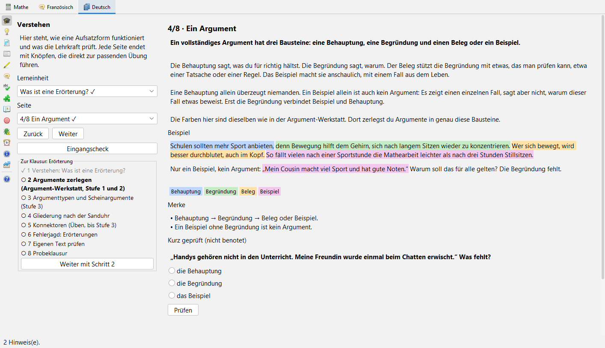
Die erste Karte der Leiste erklärt, bevor geübt wird. Die Einheit Was ist eine Erörterung? hat acht Seiten: wozu man erörtert, die Arten (linear, dialektisch, frei, textgebunden), der Aufbau, das vollständige Argument, Argumenttypen und Scheinargumente, das Ordnen nach Sanduhr und Pingpong, das Verbinden mit Überleitungen und Konnektoren und zuletzt ein ganzer Aufsatz. Jede Seite hat einen Kernsatz, eine kurze Erklärung, ein Beispiel, höchstens drei Merksätze und eine Frage, die nur Rückmeldung gibt – benotet wird nichts. Danach folgt die Zusammenfassung „Was die Lehrkraft prüft“ als Liste zum Abhaken (sie wird nicht gespeichert) und der Knopf Weiter auf dem Lernweg.
Unter jeder Seite stehen Knöpfe zum Vertiefen. Ein Klick öffnet das passende Werkzeug und stellt es ein, etwa die Argument-Werkstatt auf Stufe 2 oder die Fehlerjagd auf einen Text mit dem Schwerpunkt „neues Argument im Schluss“; die Statuszeile sagt, was eingestellt wurde. Was ein Werkzeug nicht übernehmen kann, nennt die Statuszeile ebenfalls. Eine laufende Klausur wird nie verändert: dann steht dort „Die Klausur läuft; Voreinstellung nicht übernommen.“
Nach einem Sprung steht über der Arbeitsfläche die Leiste Zurück zu: … · Seite n. Sie führt auf genau die Seite zurück, von der man kam; das Kreuz schließt sie, und wer selbst eine andere Karte wählt, braucht sie nicht mehr. Umgekehrt tragen Argument-Werkstatt, Gliederung, Fehlerjagd, Üben, Nachschlagen, Klausur und Prüfer unter ihrem Titel den Knopf Erklärung dazu, der die passende Seite öffnet.
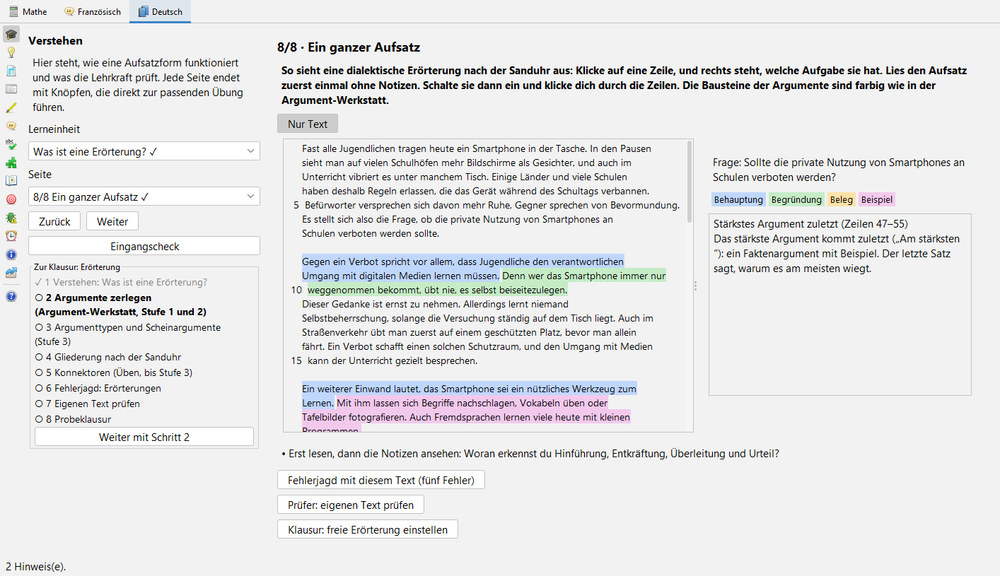
Seite 8 zeigt einen kommentierten Musteraufsatz: eine dialektische Erörterung nach der Sanduhr zur Frage, ob die private Nutzung von Smartphones an Schulen verboten werden sollte. Zuerst steht er ohne Hilfe da; Mit Notizen färbt die Bausteine der Argumente, und ein Klick auf eine Zeile zeigt rechts, welche Aufgabe sie hat (Hinführung, Fragestellung, Gegenargument, Entkräftung, Überleitung, eigenes Argument, stärkstes Argument, Urteil, Ausblick). Fehlerjagd mit diesem Text öffnet eine Fassung desselben Aufsatzes mit fünf eingebauten Fehlern.
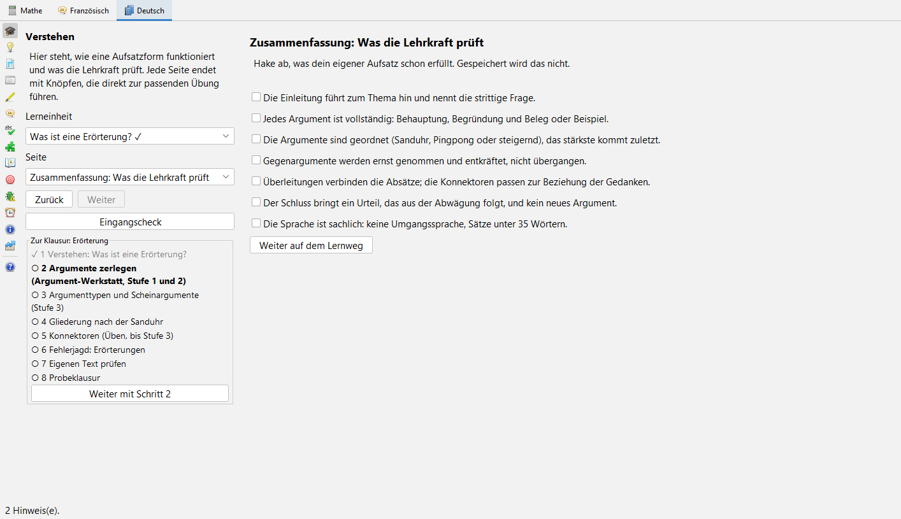
Die Karte zeigt den Lernweg „Zur Klausur: Erörterung“ in acht Schritten, vom Lesen der Einheit über die Argument-Werkstatt, die Gliederung nach der Sanduhr, die Konnektoren, zwei Fehlerjagden an Erörterungen und einen eigenen Text im Prüfer bis zur Probeklausur. Ein Schritt ist abgehakt, wenn das Fach es selbst sieht: alle Seiten geöffnet, eine Stufe durch drei richtige Antworten erreicht (eine nur eingestellte Stufe zählt nicht), eine Gliederung ohne Befund, vier von fünf Fehlern gefunden, ein Text ab 300 Wörtern ohne sicheren Hinweis, eine abgegebene Klausur. Warum eine Schwelle so gewählt ist, steht im Tooltip des Schritts. Abgehakt bleibt abgehakt. Weiter mit Schritt n springt in den nächsten offenen Schritt; dieselbe Liste steht in der Karte Fortschritt.
Beim ersten Öffnen bietet die Karte einmal den Eingangscheck an: fünf Fragen zu den Seiten 2 bis 6. Er lässt sich überspringen und über die Karte wieder aufrufen. Das Ergebnis empfiehlt nur einen Einstieg, etwa „Seite 4 ansehen, dann Schritt 2“; gespeichert wird allein diese Empfehlung, keine Antwort.
Die Argument-Werkstatt
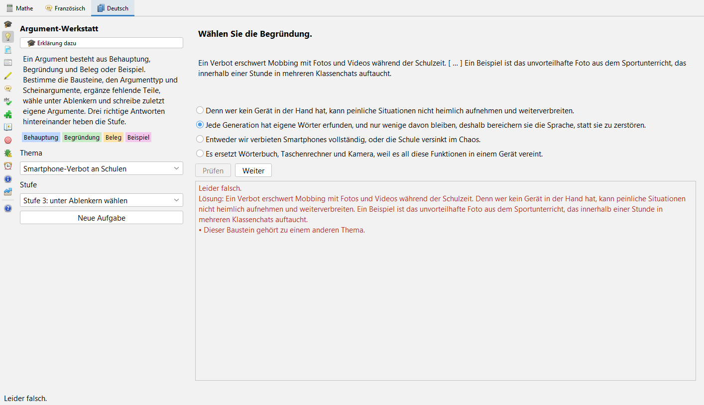
In der Karte wählt man ein Thema (oder alle) und die Stufe; Neue Aufgabe zieht eine Aufgabe. Die Stufen:
- Erkennen – einen Satz als Behauptung, Begründung, Beleg oder Beispiel einordnen, den Typ eines Arguments bestimmen oder ein Scheinargument benennen.
- Ergänzen – die fehlende Begründung, den Beleg oder das Beispiel selbst schreiben. Geprüft wird die Form: ein Begründungswort, kein Zirkelschluss, genug Länge; danach steht das Muster da.
- Unter Ablenkern wählen – vier Bausteine: das Original, derselbe Baustein der Gegenseite, ein Scheinargument, ein Baustein aus einem anderen Thema. Lange Antworten brechen um.
- Selbst schreiben – ein ganzes Argument zu Thema und Seite, geprüft auf alle Bausteine und vom Form-Prüfer.
Prüfen bewertet: richtig, richtig mit Hinweisen, unvollständig oder falsch, mit den Befunden darunter. Drei richtige Antworten nacheinander heben die Stufe, zwei daneben senken sie; die Statuszeile sagt es. Weiter zieht die nächste Aufgabe.
Die Material-Werkstatt
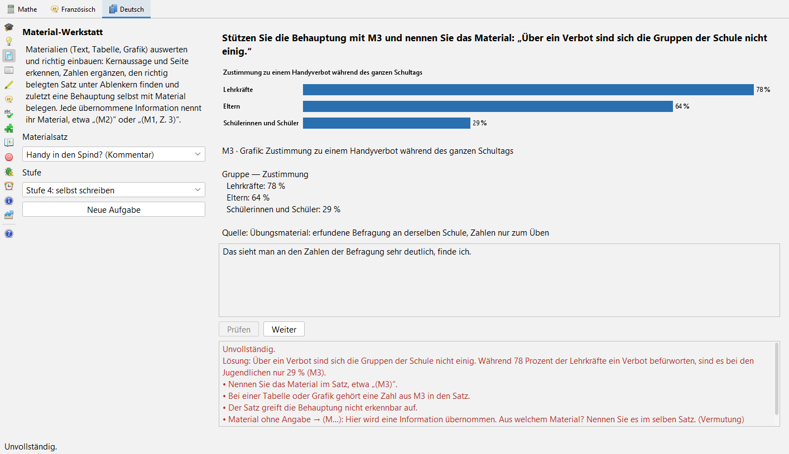
Die Werkstatt übt das materialgestützte Schreiben: Ein Materialsatz besteht aus einer Aufgabe mit Textsorte (etwa Kommentar, Leserbrief oder Rede) und mehreren Materialien – Texten mit Zeilennummern, Tabellen und Grafiken. In der Karte wählt man einen Materialsatz oder alle und die Stufe. Wie in der Argument-Werkstatt steigt die Schwierigkeit in vier Stufen:
- erkennen: Kernaussage eines Materials und die Seite, die es stützt;
- ergänzen: eine Zahl oder Angabe aus dem Material in einen Satz einsetzen;
- unter Ablenkern wählen: den Satz finden, der das Material richtig wiedergibt und belegt;
- selbst schreiben: eine Behauptung mit dem Material belegen.
Jede übernommene Information nennt ihr Material, etwa „(M2)“ oder „(M1, Z. 3)“. Fehlt die Angabe, ist die Antwort unvollständig, und die Rückmeldung sagt, welches Material gemeint war. Grafiken erscheinen als Balken über dem Formular. Die Materialien kennt auch der Form-Prüfer: In seiner Karte wählt man einen Materialsatz, dann meldet er Zahlen und Zitate ohne Angabe und wörtlich Abgeschriebenes.
Die Gliederung
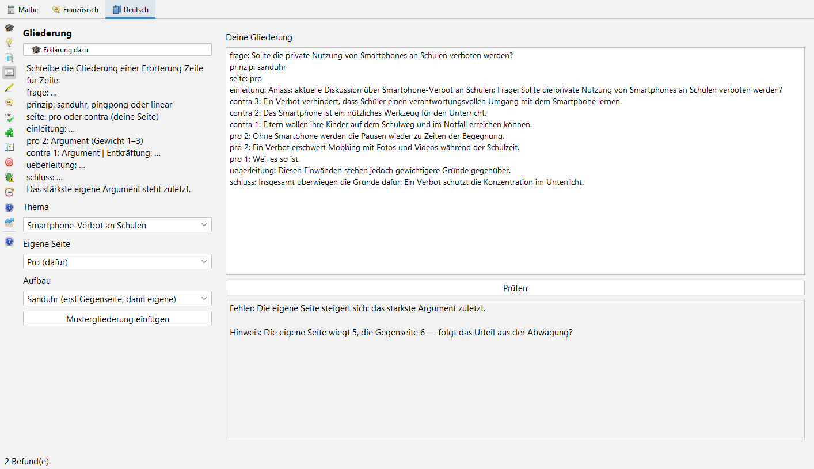
Die Gliederung schreibt man Zeile für Zeile; die Karte erklärt die Zeilenarten. Ein Punkt beginnt mit
pro oder contra und seinem Gewicht von 1 bis 3, eine Entkräftung folgt hinter
| Entkräftung:. Prüfen meldet Fehler und Hinweise:
- Einleitung und Schluss müssen da sein, dazu genug Argumente (dialektisch zwei je Seite, linear drei).
- Sanduhr: erst die ganze Gegenseite, dann die Überleitung, dann die eigene Seite; innerhalb einer Seite steigen die Gewichte, das stärkste eigene Argument steht zuletzt.
- Pingpong: jedes Argument der Gegenseite wird entkräftet, das letzte Wort hat die eigene Seite.
- Linear: nur die eigene Seite, steigend.
- Ein Hinweis kommt, wenn die Gegenseite nach den Gewichten mehr wiegt als die Seite, für die sich der Schluss entscheidet, oder wenn der Schluss kein Urteil nennt.
Mustergliederung einfügen setzt eine Gliederung aus dem Material zu Thema, Seite und Aufbau ein; steht schon etwas da, fragt die Karte vorher nach (ein zweiter Klick ersetzt).
Die Argumentationsanalyse
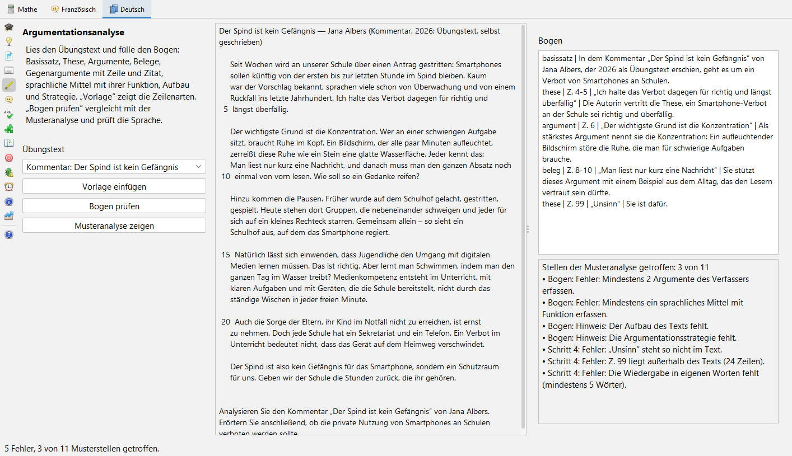
In der Karte wählt man einen Übungstext. Links steht er mit Zeilennummern, Kopf und Aufgabe; rechts der Bogen, je Zeile ein Eintrag:
basissatz | In dem Kommentar „…“ von …, erschienen …, geht es um … these | Z. 4-5 | „Zitat“ | Wiedergabe im Konjunktiv argument | Z. 6 | „Zitat“ | Wiedergabe mittel | Z. 8 | „Zitat“ | vergleich | Funktion: was es bewirkt aufbau | … strategie | …
Dazu gibt es beleg und gegenargument. Vorlage einfügen setzt die Zeilenarten als
Kommentar ein (Zeilen mit # zählen nicht). Bogen prüfen sagt je Zeile, ob das Zitat im Text steht,
die Zeilen stimmen und die Wiedergabe eigene Worte hat; für den ganzen Bogen, ob Basissatz, These, zwei Argumente, ein
Mittel mit Funktion, Aufbau und Strategie da sind; und der Form-Prüfer liest den Bogen als Aufsatz (Konjunktiv,
Präsens, keine Ich-Form). Oben steht, wie viele Stellen der Musteranalyse getroffen sind. Musteranalyse zeigen
zeigt sie ganz. Jeder Übungstext hat seinen eigenen Bogen.
Der Form-Prüfer
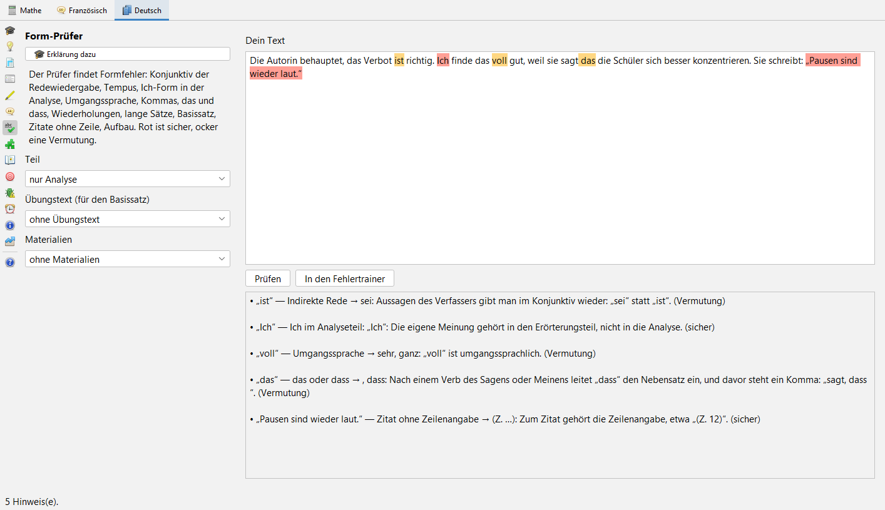
In der Karte stellt man ein, welcher Teil es ist – ganzer Aufsatz, nur Analyse oder nur Erörterung –, denn die
Ich-Form ist in der Erörterung erlaubt, in der Analyse nicht. Im ganzen Aufsatz trennen die Marken
[Analyse] und [Erörterung] die Teile. Wählt man einen Übungstext, prüft der Prüfer
auch, ob der Basissatz Verfasser, Titel und Erscheinen nennt. Nach Prüfen ist jede Stelle markiert: rot
ist sicher, ocker eine Vermutung, die man selbst nachsehen sollte. Ändert man den Text, verschwinden die
Markierungen. In den Fehlertrainer legt jede gemeldete Stelle als Karte an, ohne doppelte.
Üben: Sprache und Kommunikation
In der Karte wählt man die Übung. Konnektoren: zu einem Verknüpfungswort die Relation wählen, eine Lücke frei füllen, eine Lücke unter vier Wörtern füllen oder zwei Aussagen selbst verbinden. Frei gefüllt zählt jedes Wort derselben Relation und Art (da statt weil); eines anderer Art passt nicht in die Wortstellung (denn statt weil). Operatoren: den Anforderungsbereich eines Operators wählen, zu einer Beschreibung den Operator nennen oder unter vieren wählen und die Operatoren einer Aufgabenstellung herausschreiben.
Stilmittel: zu einem Beispiel das Stilmittel wählen, zu einem Merkmal den Namen nennen, unter Ablenkern zuordnen und auf Stufe 4 die Wirkung eines Stilmittels selbst formulieren – die Antwort muss ein Wort der Wirkung enthalten (verdeutlicht, betont, lenkt den Blick …), sonst kommt ein Hinweis. Alle Stilmittel stehen unter Nachschlagen. Kommunikation: Begriffe der Kommunikationsmodelle erkennen (Sender und Empfänger, Axiome, die vier Seiten einer Nachricht), zu einer Äußerung die Seite ergänzen, Nähe- oder Distanzsprache unter Ablenkern bestimmen und auf Stufe 4 die Merkmale eines Ausschnitts nennen (Emojis, Kurzwörter, Ellipsen, Anrede mit du oder Sie, Nominalstil, langer Satzbau …). Ein Merkmal, das im Ausschnitt nicht vorkommt, ist ein Fehler.
Jede Übung hat ihre eigene Stufe; die Bedienung ist dieselbe wie in der Werkstatt.
Literatur üben
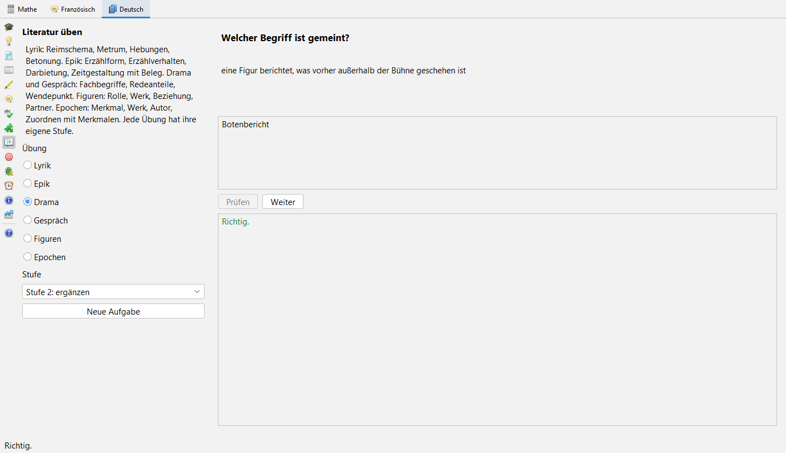
Sechs Übungen an den mitgelieferten Texten, je in vier Stufen:
- Lyrik: Reimschema einer Strophe, Metrum (Jambus, Trochäus, Daktylus, Anapäst), Zahl der Hebungen und Kadenz
eines Verses, auf Stufe 4 die Betonung eines Verses als Folge aus
x(betont) und-(unbetont). Eine Betonung, die das Metrum erzwingt, wo das Wort anders klingt, heißt Tonbeugung und gibt einen Hinweis statt eines Fehlers. - Epik: Erzählform (Ich- oder Er-Erzähler), Erzählverhalten (auktorial, personal, neutral), Darbietung und
auf Stufe 4 die Zeitgestaltung mit einem Zitat als Beleg:
zeitraffend | „Zitat“. Das Zitat muss im Text stehen. - Drama und Gespräch: Fachbegriffe (Monolog, Regieanweisung, Exposition …; Gesprächsanalyse), Redeanteile der Figuren, unter Ablenkern wählen und auf Stufe 4 die Zeile des Wendepunkts nennen. Eine Zeile daneben gibt einen Hinweis.
- Figuren: Rolle einer Figur, das Werk, ihre Beziehung zu einer anderen (Familie, Liebe, Gegnerschaft, Macht, Hilfe) und auf Stufe 4 alle Figuren, mit denen sie verbunden ist. Grundlage sind die Konstellationen von Michael Kohlhaas, Die Marquise von O...., Der zerbrochne Krug und den beiden Szenen.
- Epochen: ein Merkmal einer Epoche, das Werk, der Autor und auf Stufe 4 die Epoche eines Textes mit zwei
Merkmalen:
Romantik | Sehnsucht, Natur als Spiegel der Seele. Ein Merkmal einer anderen Epoche wird gemeldet.
Interpretation und Vergleich
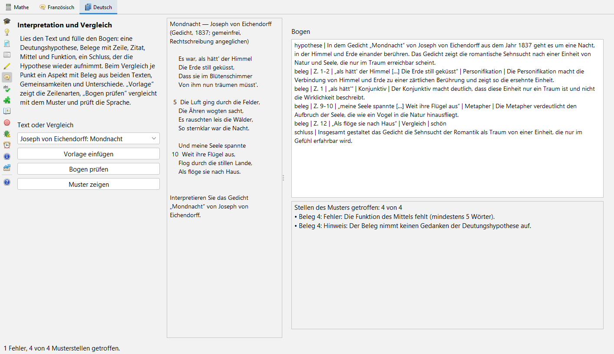
Aufbau wie die Argumentationsanalyse. In der Karte wählt man ein Gedicht, einen Erzähltext, eine Szene oder einen Vergleich zweier Gedichte. Der Bogen einer Interpretation:
hypothese | Was der Text zeigt und wie er es zeigt beleg | Z. 3 | „Zitat“ | Personifikation | Funktion: was es bewirkt schluss | Die Hypothese wieder aufnehmen
Der Bogen eines Vergleichs nennt je Punkt einen Aspekt mit je einem Beleg aus beiden Texten und einer Deutung:
hypothese | Was beide Texte verbindet und trennt, mit beiden Titeln gemeinsam | Natur | Z. 2 | „Zitat aus A“ | Z. 4 | „Zitat aus B“ | Deutung unterschied | Sehnsucht | Z. 5 | „…“ | Z. 6 | „…“ | Deutung schluss | …
Bogen prüfen meldet: eine Hypothese, die nur den Inhalt beschreibt statt zu deuten; zu wenige Belege; ein Zitat, das nicht im Text steht, oder eine falsche Zeile; ein unbekanntes Stilmittel; eine Funktion ohne Wirkung; Belege, die die Hypothese nicht aufnehmen; beim Vergleich fehlende Gemeinsamkeiten oder Unterschiede und eine Hypothese ohne beide Titel; einen Schluss ohne Bezug. Dazu liest der Form-Prüfer den Bogen als Aufsatz (Präsens, Zitierweise). Muster zeigen zeigt die Musterinterpretation bzw. den Mustervergleich als Aufsatz. Jede Aufgabe hat ihren eigenen Bogen.
Die Texte von Heinrich von Kleist (Michael Kohlhaas, Das Erdbeben in Chili, Die Marquise von O....) sind kurze Ausschnitte; ihr Wortlaut ist vor dem Unterricht an einer gedruckten Ausgabe zu prüfen.
Die Fehlerjagd
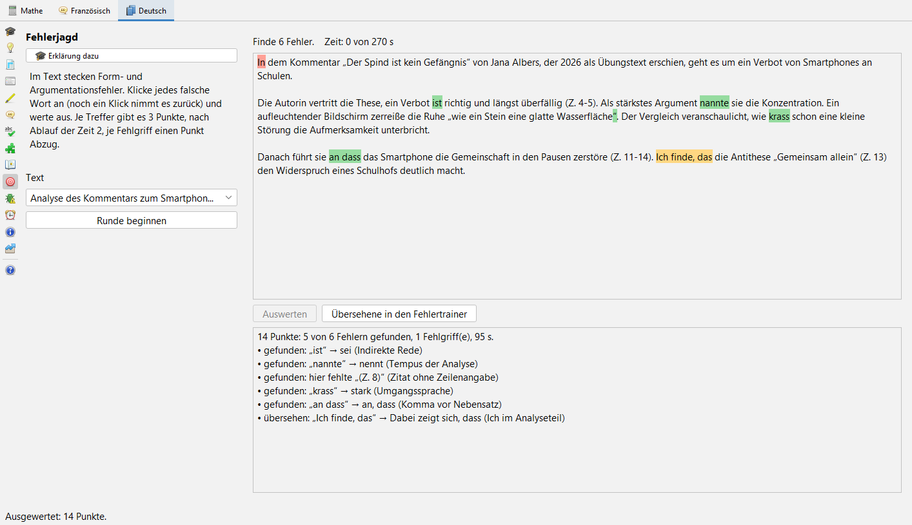
In der Karte wählt man einen Text und drückt Runde beginnen. Oben stehen die Zahl der Fehler und die Uhr. Ein Klick auf ein Wort markiert es, ein zweiter nimmt die Markierung zurück. Auswerten zeigt: grün gefunden, orange übersehen, rot daneben. Je Treffer gibt es 3 Punkte, nach Ablauf der Zielzeit 2, je Fehlgriff einen Punkt Abzug, nie unter null. Fehlt im Text etwas (etwa eine Zeilenangabe), heißt die Zeile „hier fehlte …“. Übersehene in den Fehlertrainer legt die übersehenen Stellen als Karten an.
Der Fehlertrainer
Jede Karte ist ein Satz aus einem eigenen Text mit einer Lücke an der Stelle des Fehlers; man schreibt die richtige Fassung hinein und drückt Enter oder Prüfen. Richtig gefüllt rückt die Karte ein Fach weiter und kommt nach 1, 2, 4, 8 oder 16 Tagen wieder, falsch geht sie zurück in Fach 1. Die Karte zeigt den Stand der Kartei je Fach und wie viele Karten heute fällig sind. Alle Karten löschen fragt in der Karte nach.
Die Klausur
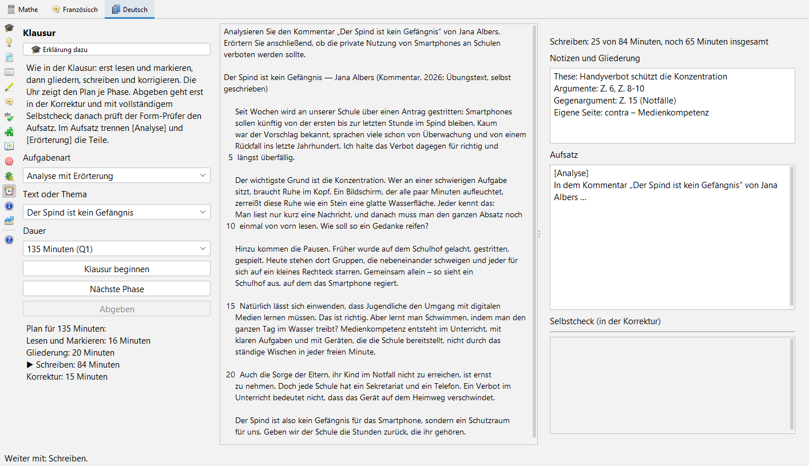
In der Karte wählt man die Aufgabenart (Analyse mit Erörterung, materialgestütztes Schreiben, freie Erörterung, Interpretation eines literarischen Textes oder Interpretation mit Erörterung), den Text oder das Thema und die Dauer (90, 135, 180 oder 255 Minuten) und drückt Klausur beginnen. Der Plan teilt die Zeit auf vier Phasen – Lesen und Markieren, Gliederung, Schreiben, Korrektur – und zeigt die laufende mit ▶; die Uhr über den Notizen nennt die Minuten der Phase und die verbleibende Zeit. Nächste Phase schaltet weiter; ist die Zeit um, beginnt die Korrektur von selbst. Abgeben geht erst in der Korrektur und wenn alle Punkte des Selbstchecks abgehakt sind; danach prüft der Form-Prüfer den ganzen Aufsatz, und die Auswertung nennt die gebrauchte Zeit je Phase neben dem Plan. Eine laufende Klausur bleibt im Arbeitsstand; neu beginnen geht erst nach einer Rückfrage.
Bei der Interpretation steht links der literarische Text mit Zeilennummern; der Selbstcheck fragt nach Basissatz, Deutungshypothese, Zitaten mit Zeile, Präsens, Mittel mit Funktion, Verbindung von Form und Inhalt und einem deutenden Schluss. Die Interpretation mit Erörterung gibt es zu den Texten mit einer Erörterungsfrage (etwa Michael Kohlhaas: Kann ein verletztes Rechtsgefühl Selbstjustiz rechtfertigen?); ihr Selbstcheck verlangt zusätzlich die Überleitung und die Punkte der Erörterung.
Der Fortschritt
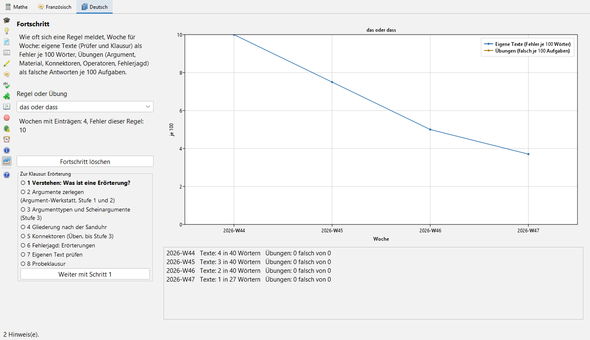
Der Fortschritt zählt, wie oft sich eine Regel meldet, und zwar Woche für Woche. In der Karte wählt man eine Regel des Prüfers oder eine Übung (Argument-Werkstatt, Material-Werkstatt, Konnektoren, Operatoren, Stilmittel, Kommunikation, Lyrik, Epik, Drama, Gespräch, Figuren, Epochen, Fehler der Fehlerjagd ohne Prüferregel). Das Diagramm zeigt zwei Linien:
- Eigene Texte: was der Form-Prüfer und die Auswertung einer abgegebenen Klausur finden, als Fehler je 100 Wörter;
- Übungen: Antworten in den Werkstätten und übersehene Fehler der Fehlerjagd, als falsche Antworten je 100 Aufgaben. Eine Fehlerstelle der Jagd zählt unter der Regel des Prüfers, zu der sie gehört.
Darunter stehen die Wochen als Tafel und die Summe der Regel. Jede Prüfung zählt, auch eine ohne Hinweis – erst so wird ein Rückgang sichtbar. Fortschritt löschen fragt in der Karte nach; der Arbeitsstand behält den Fortschritt und die gewählte Regel. Dieselbe Karte hat das Fach Französisch.
Nachschlagen
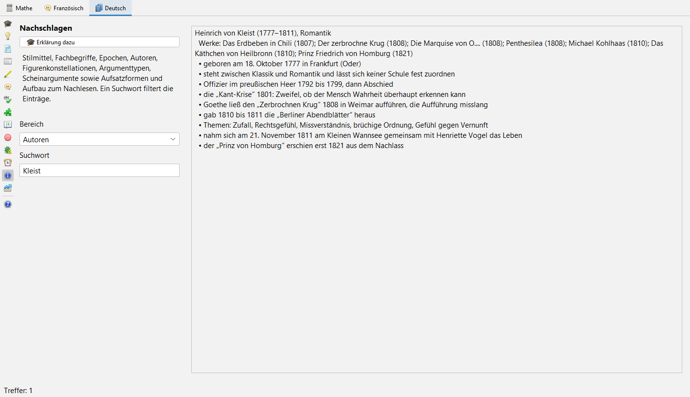
In der Karte wählt man einen Bereich – Stilmittel (Merkmal, Beispiel, Wirkung), Fachbegriffe, Epochen (Zeitraum, Leitgedanke, Merkmale, Autoren), Autoren (Lebensdaten, Epoche, Werke, Fakten), Figurenkonstellationen, Argumenttypen, Scheinargumente und Fehlschlüsse oder Aufsatzformen und Aufbau (mit einem Verweis auf die ausführliche Seite in Verstehen) – und tippt ein Suchwort; gezeigt werden die Einträge, die es enthalten. Hier wird nur gelesen, nichts bewertet.
Was der Arbeitsstand behält
Der Arbeitsstand behält, welches Werkzeug offen war, die Stufen jeder Übung, Thema und Auswahl der Karten, die Gliederung, den Bogen je Übungstext, je Interpretation und je Vergleich, Bereich und Suchwort des Nachschlagens, den Text des Prüfers, die Karten des Fehlertrainers und eine laufende Klausur samt Aufsatz und Notizen, dazu Seite und Einheit von Verstehen, die gelesenen Seiten, die erledigten Schritte des Lernwegs und die Empfehlung des Eingangschecks. Kaputte Einträge werden in der Statuszeile gemeldet und durch die Vorgabe ersetzt.